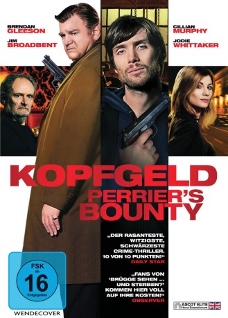

#1776 Kopfgeld - Perrier's Bounty
 
 IMDB-Wertung: 6.4 / 10
IMDB-Wertung: 6.4 / 10  Metascore: 47
Metascore: 47 
Der Tag fängt schlecht an für Michael. Er hat einen üblen Kater und erwacht mitten in einen echten Alptraum hinein. Denn sein Kredithai Perrier hat ein fettes Kopfgeld auf ihn ausgesetzt und schickt ihm zwei Schläger auf den Hals. Gerade wollen diese Michael die Beine brechen, als seine heimlich geliebte Nachbarin Brenda in übereilter Solidarität einen der beiden erschießt. In dem Moment taucht auch noch Daddy auf und behauptet, dass der Sensenmann persönlich ihm sein nahes Ende angekündigt hat. Michael hat jetzt eine Leiche am Hals, seinen irren Dad und die immer depressiver werdende Brenda, während sich die halbe Unterwelt von Dublin formiert, um das Trio zur Strecke zu bringen. Denn Perrier ist ziemlich sauer …
Jahr: 2009
Dauer: 88 Minuten
FSK: 16
Land: Irland Studio: Ascot Elite Home EntertainmentTonspuren: DTS - ,
Untertitel: Deutsch,
Auflösung: 1080p (1920x800) Größe: 4403 MB
Genre: Action, Komödie, Krimi, Drama, Thriller
Regisseur: Ian Fitzgibbon
Drehbuch: Mark O'Rowe
Soundtrack: David Holmes
Darsteller:
 Gabriel Byrne als Voice of The Reaper
Gabriel Byrne als Voice of The Reaper Cillian Murphy als Michael McCrea
Cillian Murphy als Michael McCrea Michael McElhatton als Ivan
Michael McElhatton als Ivan Jodie Whittaker als Brenda
Jodie Whittaker als Brenda Brendan Coyle als Jerome
Brendan Coyle als Jerome Conleth Hill als Russ
Conleth Hill als Russ Domhnall Gleeson als Clifford
Domhnall Gleeson als Clifford Ned Dennehy als Clamper
Ned Dennehy als Clamper- Glenn Speers als Lar - clamper 2
 Jim Broadbent als Jim McCrea
Jim Broadbent als Jim McCrea- Padraic Delaney als Shamie
- Natalie Britton als Catherine
 Liam Cunningham als The Mull
Liam Cunningham als The Mull Brendan Gleeson als Darren Perrier
Brendan Gleeson als Darren Perrier Francis Magee als Hank
Francis Magee als Hank- Michael Ford-FitzGerald als Garda
 Andrew Simpson als Teen 2
Andrew Simpson als Teen 2- Rick Crawford als King Bill , uncredited
- Les Loveday als Walker , uncredited
 John Warman als Snooker Player , uncredited
John Warman als Snooker Player , uncredited- Don Wycherley als Orlando
- Pat McCabe als Mulligan
- Breffni McKenna als Dinny
- Wuzza Conlon als Blaise
- Brendan Dempsey als Victor
- Brian Doherty als Kenny
- Jane Brennan als Farmhouse Battleaxe
- Chris Newman als Teen Joyrider
- Marco Amaral als Dog Handler / Gang Member , uncredited
- Guðmundur Auðunsson als Gang Member / Dog Handler , uncredited
- John Banks als Dog Handler , uncredited
- Chantal Lopez-Dias als Young Gangster , uncredited
Datei: X:\2009(G-M)\Kopfgeld - Perrier's Bounty (2009, FSK16, 1920x800).mkv seit 19.08.2015
Festplatte: HD 2009(G-Z)-2010(A-F)
 Es gibt insgesamt 82 Filme in der Gruppe '2009(G-M)'
Es gibt insgesamt 82 Filme in der Gruppe '2009(G-M)'